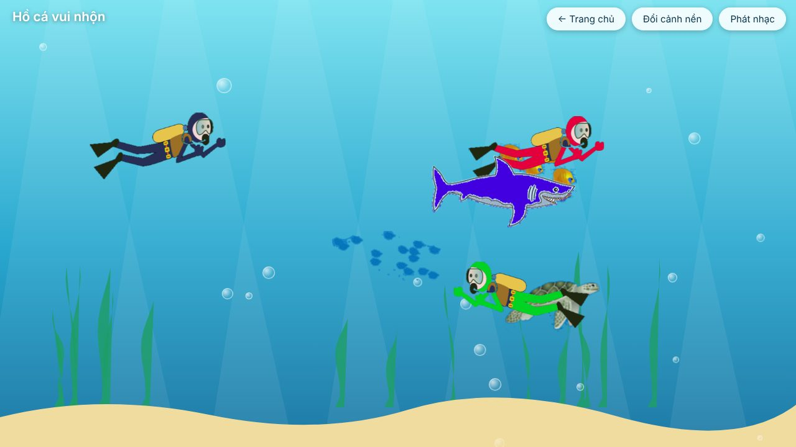
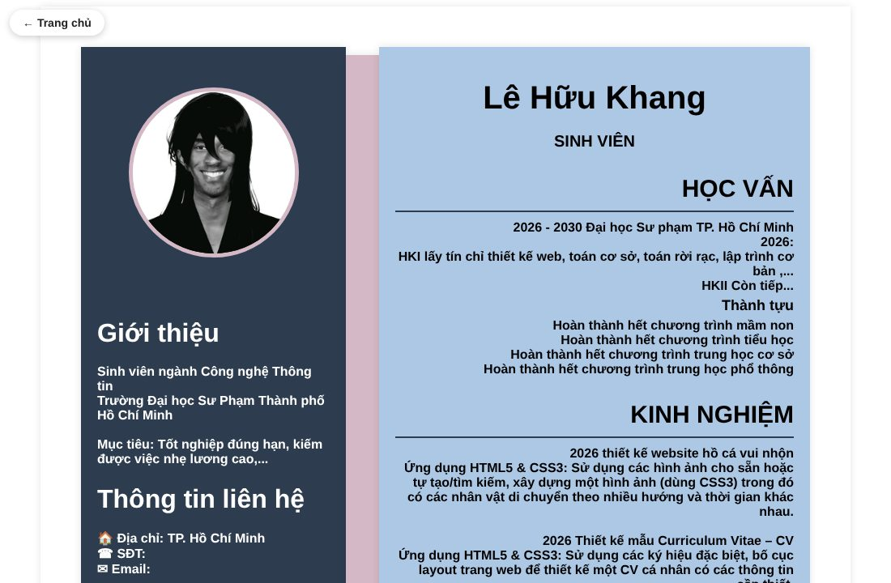

Bài 6.1.1
Hồ cá vui nhộn
Thợ lặn, cá mập, rùa và các đàn cá bơi nhiều hướng với tốc độ khác nhau, quay đầu khi chạm tường. Có nút đổi cảnh nền và bật/tắt nhạc.
Xem trang →
Bài 6.1.3
CV cá nhân
Mẫu Curriculum Vitae bố cục hai cột, có ảnh đại diện, giới thiệu bản thân, liên hệ, kỹ năng, người tham chiếu, học vấn và kinh nghiệm làm việc.
Xem trang →